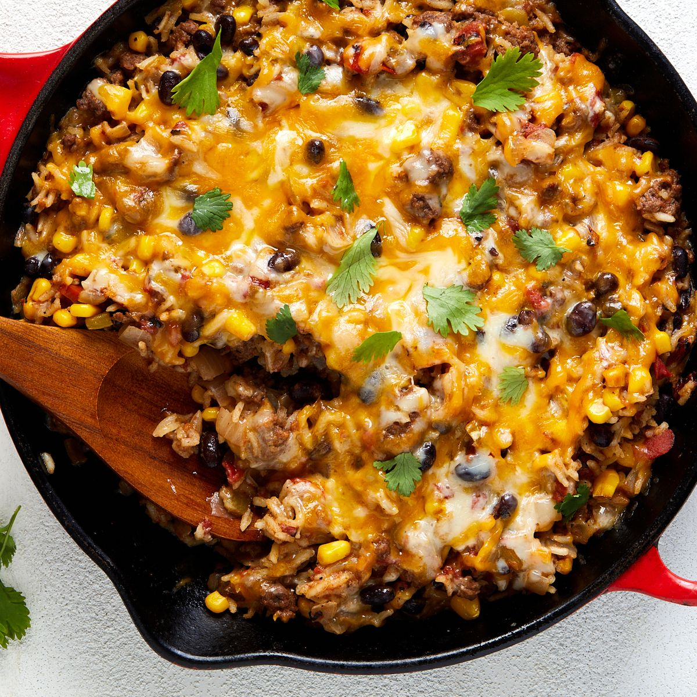

Mexican Style Beef and Rice Skillet Recipe
Mexican style beef skillet dish is a delicious and flavorful meal that combines tender beef with a variety of spices, peppers, onions, and tomatoes. It's usually served with warm tortillas, guacamole, and sour cream on the side, making it a perfect dish for a family gathering or a casual dinner. With its bold flavors and easy preparation, it's no wonder that Mexican beef skillet dish is a popular choice for many households.
Ingredients
- 1 tablespoon olive oil
- 1 pound ground beef
- 1 small onion, chopped
- 2 cloves garlic, minced
- 1 red bell pepper, chopped
- 1 can diced tomatoes, drained
- 1 can black beans, drained and rinsed
- 1 cup frozen corn kernels
- 1 tablespoon chili powder
- 1 teaspoon ground cumin
- Salt and pepper, to taste
- 1 cup white rice
- 2 cups water
- Shredded cheese, chopped fresh cilantro, and sliced jalapenos, for garnish (optional)
Steps
- Heat the olive oil in a large skillet over medium-high heat. Add the ground beef, onion, and garlic to the skillet and cook, breaking up the meat with a wooden spoon, for about 5-7 minutes, until the meat is browned and the onion is softened.
- Add the red bell pepper, diced tomatoes, black beans, corn, chili powder, cumin, salt, and pepper to the skillet and stir to combine.
- Add the rice and water to the skillet and bring to a boil. Reduce the heat to low, cover the skillet with a lid, and simmer for about 20-25 minutes, until the rice is cooked and the liquid is absorbed.
- Garnish with shredded cheese, chopped fresh cilantro, and sliced jalapenos, if desired.
Return to top
Return to main page